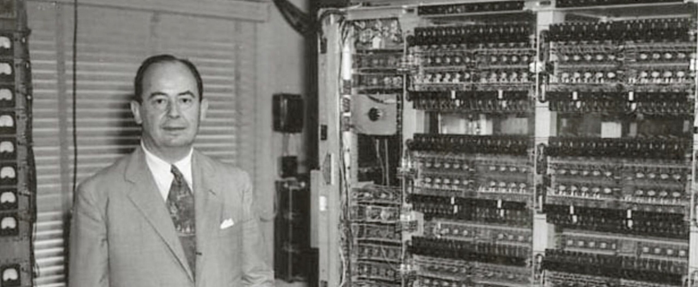

Neumann János (1903-1957)

A Számítógép Atyja
Neumann János (John von Neumann) magyar származású matematikus volt. A kvantummechanikától a játékelméletig számos területen alkotott maradandót, de a legnagyobb hatása talán a számítástechnikára volt.
A Neumann-elvek
A mai számítógépek működése az általa lefektetett elveken alapul:
- Kettes számrendszer használata: Minden adat 0 és 1 sorozata.
- Memória: Az adatok és a programok ugyanabban a memóriában tárolódnak.
- Soros utasítás-végrehajtás: A gép lépésről lépésre hajtja végre a parancsokat.
- Univerzális gép: Ugyanaz a hardver különböző szoftverekkel bármilyen feladatra alkalmas.
Élete és Öröksége
Budapesten született, majd Németországban és az Egyesült Államokban dolgozott. Részt vett az első elektronikus számítógép, az ENIAC fejlesztésében is. Zsenialitása nélkül a mai digitális világ nem létezne.